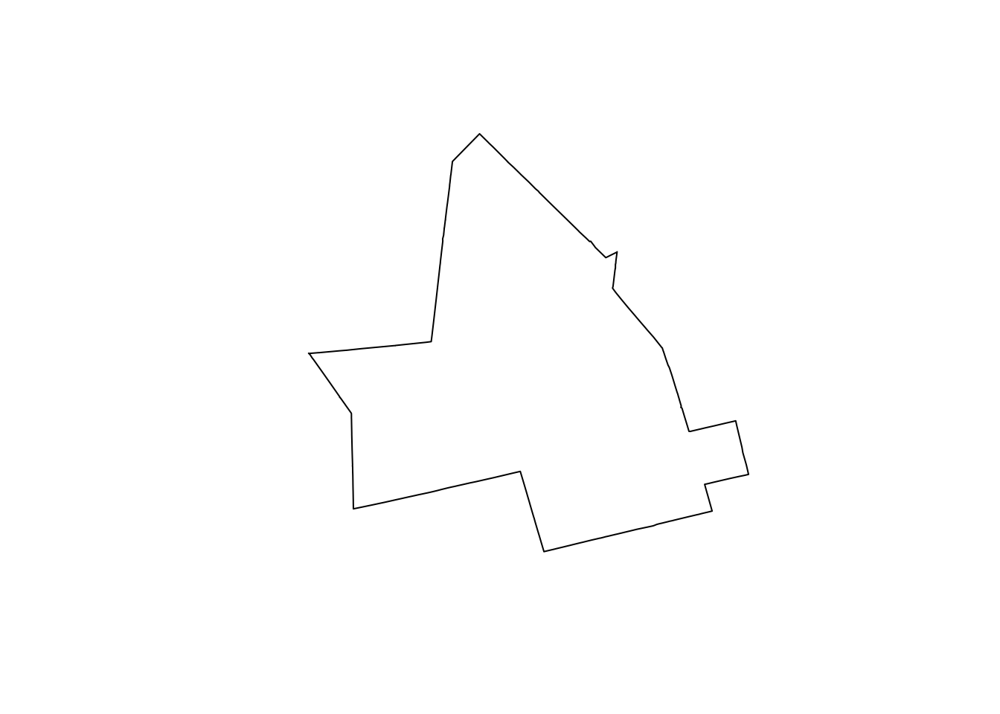

Chapter 2 Wrangling
2.1 Data Science Workflows
2.1.1 Reading
This week will provide an introduction to data science using r. You will be introduced to data science through the lens of exploratory data analysis, beginning with the Explore section of the textbook, read and work through the following chapters:
2.2 i/o
2.2.1 Reading
This week will cover the surprisingly important topic of data i/o - that is, data importing and outputting data. In the Wrangle section of the textbook, read and work through the following chapters:
- JHDSc - Data import
- W&G - Tidy data
- As well as the paper describing the
tidyapproach to data, published in the Journal of Statistical Software.
- As well as the paper describing the
- R documentation - Review of Data Import/Export
Data sources and formats vary widely in environmental data analytics. Data acquisition is the steps taken to access and load data for your own analysis. In a classic analysis workflow architecture, data are downloaded to a local working computer and interact with software installed there to complete your analysis.
Raw data almost always has to be processed in different ways to make it useful. This can in include Quality Assurance/Quality Control (QA/QC) steps such as checking and removing duplicate records, cleaning out special characters from text, to things like date formatting and computing derived variables. Having a consistent way to generate data transformations is a cornerstone of reproducible research and modern scientific data workflows. This is one of the key reasons scripting has become so important to environmental data analytics.
The tidy approach to data science aims to provide a cohesive and consistent approach to data organization in r.
2.3 Data objects
2.3.1 Reading
We will cover some more basic elements of the R programming language - both at the base and more modern levels. At some point having an understanding of how R works at a deeper level becomes necessary to get the most out of it and develop effective analysis and visualization approaches.
2.4 Databases
2.4.1 Resources
There are no dedicated readings this week, but below are some of the resources discussed during class this week.
2.5 Spatial data
Spatial data wrangling encompasses a set of techniques usually found in standard GIS courses. Tasks such as spatial query, spatial overlay, combining vector and raster data, are all often necessary steps in preparing spatial data for analysis. Due to the mature collection of packages for working with spatial data n r, all of these operations can be performed in r, generally through a tidy workflow. We will review some of the more common spatial wrangling tasks this week through a tutorial.
2.5.1 Reading
- 501 Lecture slides for review
- Pebezma 2018
- Pebezma - geom
- Pebezma - sf
- Gimond Appendix- Walk-thru of common spatial operations
2.5.1.1 Point in polygon counts
Data: point event crime in waterloo, polygon census units in waterloo Task: for a given type of crime, subset and count occurences within each census unit Operation: Spatial query/subsetting
Read data in:
## [1] TRUE## Reading layer `lct_000b16a_e' from data source `/Users/colinr23/Dropbox/course/g606/tec/gg606/data/lct_000b16a_e.shp' using driver `ESRI Shapefile'
## Simple feature collection with 5721 features and 8 fields
## geometry type: MULTIPOLYGON
## dimension: XY
## bbox: xmin: 3912489 ymin: 693729 xmax: 8996156 ymax: 2810986
## projected CRS: PCS_Lambert_Conformal_ConicThe Region of Waterloo has an open data we can access some other datasets from:
We now have ct which is an sf class which represents census tracts in the Waterloo area.
2.5.1.2 Read in our three spatial data files
## Reading layer `Trails' from data source `/Users/colinr23/Dropbox/course/g606/tec/gg606/data/Trails/Trails.shp' using driver `ESRI Shapefile'
## Simple feature collection with 1633 features and 28 fields
## geometry type: MULTILINESTRING
## dimension: XY
## bbox: xmin: -80.81168 ymin: 43.26102 xmax: -80.27309 ymax: 43.65101
## geographic CRS: WGS 84## Reading layer `Park_Natural_Area_Ecological_Land_Classification' from data source `/Users/colinr23/Dropbox/course/g606/tec/gg606/data/Park_Natural_Area_Ecological_Land_Classification/Park_Natural_Area_Ecological_Land_Classification.shp' using driver `ESRI Shapefile'
## Simple feature collection with 625 features and 12 fields
## geometry type: MULTIPOLYGON
## dimension: XY
## bbox: xmin: -80.55806 ymin: 43.37734 xmax: -80.40301 ymax: 43.50665
## geographic CRS: WGS 84## [1] "PCS_Lambert_Conformal_Conic"## [1] "+proj=lcc +lat_0=63.390675 +lon_0=-91.8666666666667 +lat_1=49 +lat_2=77 +x_0=6200000 +y_0=3000000 +datum=NAD83 +units=m +no_defs"## [1] "WGS 84"## [1] "+proj=longlat +datum=WGS84 +no_defs"## [1] "WGS 84"## [1] "+proj=longlat +datum=WGS84 +no_defs"## [1] 4326Here we can make some further observations of our data.
- Our reprojection worked as the dare plotting correctly
- The trails layer exceeds the boundaries of the
ctlayer - There are no
ecopolygons in the outer areas of thects
We can clip the trails layer to the bounds of the ct layer. It might be useful to generate a study area polygon based on the union of the polygons in ct. We saw last week we can do this using dplyr syntax for grouping
studyArea <- ct %>%
group_by() %>%
summarise()
plot(st_geometry(studyArea))
which we can now provide to a clip operation..
trails_clip <- st_intersection(trails, studyArea)## Warning: attribute variables are assumed to be spatially constant throughout all
## geometries#we can inspect the attributes to make sure
names(trails)## [1] "OBJECTID" "TrailType" "TrailName" "Streetname" "Municipali"
## [6] "Settlement" "OwnedBy" "Maintained" "OnOffRoad" "SurfaceMat"
## [11] "Obstructio" "InstallDat" "Width_m" "Length_m" "Notes"
## [16] "LifeStatus" "RMWID" "CreatedUse" "CreatedDat" "LastEdited"
## [21] "LastEdit_1" "LucityAuto" "InLucity" "LastSyncDa" "SegmentLuc"
## [26] "SHAPESTLen" "ContractNu" "Comments" "geometry"Examining these, we probably do not want to rely on Length_m in trails_clip since those lengths are going to refer to the length of the trial prior to us clipping them by the ct geometry. This is not a huge problem because we can extract geometric properties like length automatically from the geometry of the layer itself:
#always good to do some spot checking when wrangling
head(st_length(st_geometry(trails)))## Units: [m]
## [1] 139.3061 378.1244 680.8490 450.6546 333.1547 495.0084head(trails$Length_m)## [1] 139.3061 378.1244 680.8490 450.6546 333.1547 495.0084head(st_length(st_geometry(trails_clip)))## Units: [m]
## [1] 139.3061 378.1244 680.8490 450.6546 333.1547 495.0084head(trails_clip$Length_m)## [1] 139.3061 378.1244 680.8490 450.6546 333.1547 495.0084Now we see we are getting identical results, but we have to remember only a few trails (i.e., those at the edges) are going to be affected by this issue. The safe thing to do would be do ignore Length_m in the table and just use the result of st_length in any analysis. BUT for the purposes of illustration let’s explore where the discrepancy exists. We want to find rows in trails_clip have a different value for Length_m than the corresponding rows in trails. It is also possible that some entire features were clipped out - we can check this by simpling comparing the number of features/rows in each:
nrow(trails)==nrow(trails_clip)## [1] FALSEWhere we can see that in fact there are less features in trails_clip. If we look at how data are structured in the trails data we can learn more about how things are stored:
head(trails)## Simple feature collection with 6 features and 28 fields
## geometry type: MULTILINESTRING
## dimension: XY
## bbox: xmin: 536694.7 ymin: 4801974 xmax: 556613.6 ymax: 4814768
## projected CRS: NAD83 / UTM zone 17N
## OBJECTID TrailType TrailName
## 1 1 Multi-Use <NA>
## 2 2 Multi-Use Trans Canada Trail \\ Iron Horse Trail
## 3 3 Multi-Use Trans Canada Trail \\ Iron Horse Trail \\ Laurel Trail
## 4 4 Multi-Use Trans Canada Trail
## 5 5 Multi-Use Trans Canada Trail \\ Laurel Trail
## 6 6 Multi-Use Trans Canada Trail
## Streetname Municipali Settlement OwnedBy Maintained OnOffRoad
## 1 <NA> Cambridge Cambridge Cambridge Cambridge Off
## 2 <NA> Waterloo Waterloo Waterloo Waterloo Off
## 3 <NA> Waterloo Waterloo Waterloo Waterloo Off
## 4 University Ave W Waterloo Waterloo Waterloo Waterloo Off
## 5 University Ave W Waterloo Waterloo Waterloo Waterloo Off
## 6 <NA> Waterloo Waterloo Waterloo Waterloo Off
## SurfaceMat Obstructio InstallDat Width_m Length_m
## 1 Asphalt <NA> <NA> 3 139.3061
## 2 Asphalt <NA> <NA> 3 378.1244
## 3 Asphalt <NA> <NA> 3 680.8490
## 4 Asphalt <NA> <NA> 3 450.6546
## 5 Asphalt <NA> <NA> 3 333.1547
## 6 Stone Chips <NA> <NA> 3 495.0084
## Notes
## 1 Tunnel under rail connecting Elgin St N; Dismount bike sign, PATHWAY, SHORT TERM 2008-2012
## 2 <NA>
## 3 Laurel Trail
## 4 <NA>
## 5 Laurel Trail
## 6 <NA>
## LifeStatus RMWID CreatedUse CreatedDat LastEdited LastEdit_1 LucityAuto
## 1 In Service TRA1 <NA> 2011-08-25 RUCHRIS 2019-08-14 515
## 2 In Service TRA2 <NA> 2011-09-01 RUCHRIS 2019-08-14 516
## 3 In Service TRA3 <NA> 2011-09-01 RUCHRIS 2019-08-14 517
## 4 In Service TRA4 <NA> 2011-09-01 RMW 2018-11-05 518
## 5 In Service TRA5 <NA> 2011-09-01 RMW 2018-11-05 519
## 6 In Service TRA6 <NA> 2011-09-01 RUCHRIS 2019-08-14 520
## InLucity LastSyncDa SegmentLuc SHAPESTLen ContractNu Comments
## 1 1 2019-08-14 NA 139.3061 <NA> <NA>
## 2 1 2019-08-14 NA 378.1244 <NA> <NA>
## 3 1 2019-08-14 NA 680.8490 <NA> <NA>
## 4 1 2018-11-05 8693 450.6546 <NA> <NA>
## 5 1 2018-11-05 8693 333.1547 <NA> <NA>
## 6 1 2019-08-14 NA 495.0084 <NA> <NA>
## geometry
## 1 MULTILINESTRING ((556575.6 ...
## 2 MULTILINESTRING ((536694.7 ...
## 3 MULTILINESTRING ((536731.5 ...
## 4 MULTILINESTRING ((537060.2 ...
## 5 MULTILINESTRING ((537371.8 ...
## 6 MULTILINESTRING ((537627 48...Looking at the TrailName column, we can see that this is actually fairly complex data. Each feature is not necessarily a complete trail, and even the same section of trail may have multiple names (e.g., the Iron Horse Trail is also considered part of the Trans Canada Trail). This model also ensures that the geometry is not duplicated in these sections, although it may make summarizing and some types of analysis more difficult. In order to answer our original question - which features in trails had lengths changed and as a result the values in Length_m in trails_clip are no longer accurate. To be safe, we can simple recompute the lengths using the st_length function
trails_clip$Length_m <- st_length(trails_clip)
head(trails$Length_m)## [1] 139.3061 378.1244 680.8490 450.6546 333.1547 495.0084head(trails_clip$Length_m)## Units: [m]
## [1] 139.3061 378.1244 680.8490 450.6546 333.1547 495.0084which we can see are equivalent, however notice that the output of the st_length function are aware of their units. This is dependent on the projection metadata and can be very useful. However,some functions may not know how to deal with data of this type (check class(traisclip$Length_m) in which case you can wrap it in as.numeric to convert to standard numeric vector data.
2.5.1.3 Measuring the length of lines within polygons
One thing we may want to do is calculate the total length of trails in each census tract. Now that we know that where we have overlapping trails (i.e., segments of more than one trail overlapping) that these are stored as a single linear feature not multiple, we can simply intersect the trails_clip data with the census tract and then summarize by census tract.
#### Average attirbute value of point within polygons